Mercedes-AMG E63sPotenza e usabilità senza compromessi |
| 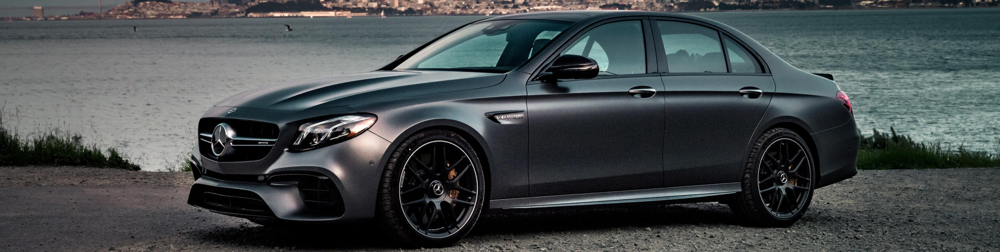 | |
| 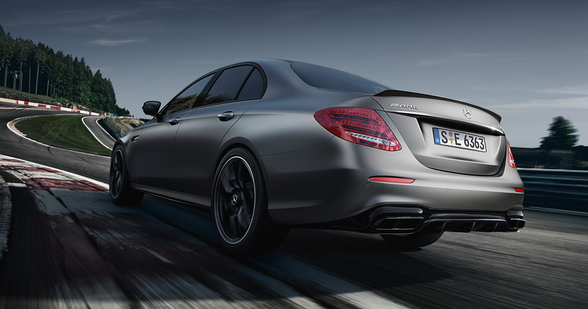 | 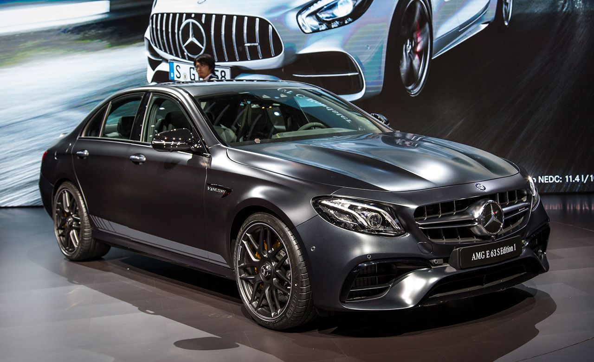 |
| 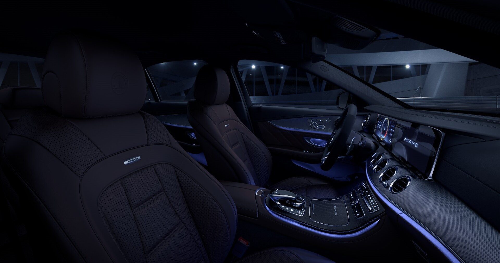 | 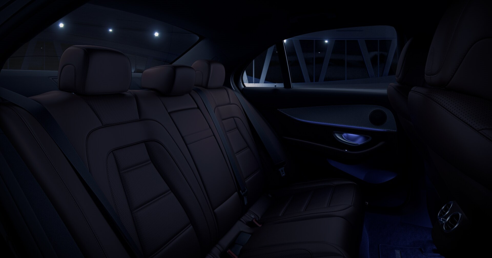 |
| 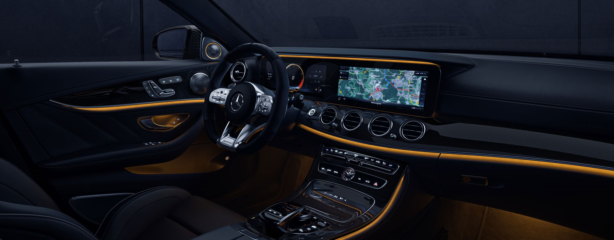 | |
| 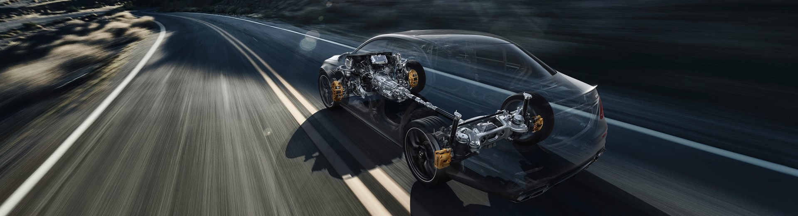 | |
| 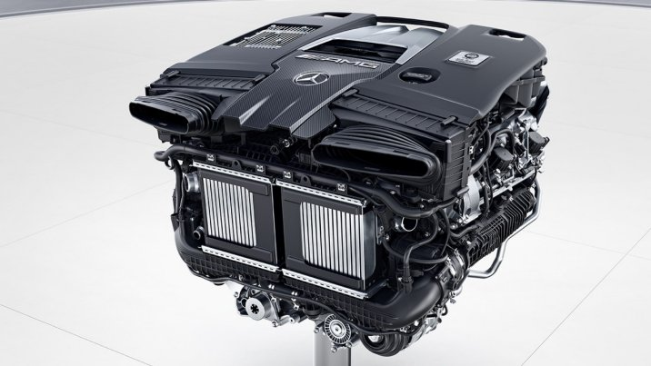 | 4.0-Litre V8 Biturbo Engine Il motore V8 da 4,0 litri di Mercedes-AMG colpisce per l'erogazione di potenza esplosiva combinata con un'erogazione di potenza finemente controllabile. I turbocompressori twin-scroll sono posizionati tra le testate ("hot inside V") per una migliore risposta. L'arresto del cilindro a carico parziale garantisce un'efficienza ancora maggiore. Nella Mercedes-AMG E 63 S 4MATIC+ questo motore porta la potenza massima a 450 kW (612 CV). La coppia massima raggiunge un nuovo valore massimo di 850 Nm. Con una potenza così immensa, il veicolo accelera a 100 km/h in 3,4 secondi da fermo e raggiunge una velocità massima governata di 250 km/h (con il pacchetto AMG Driver's: 300 km/h). Nella Mercedes-AMG E 63 4MATIC+ questo motore sviluppa 420 kW (571 CV) e 750 Nm di coppia. Con una potenza così immensa, il veicolo accelera a 100 km/h in 3,5 secondi da fermo e raggiunge una velocità massima governata di 250 km/h (con il pacchetto AMG Driver's: 300 km/h). |
.jpg) |
3.0-LITRE 6-CYLINDER IN-LINE TURBO ENGINE with electric auxiliary compressor Lo sviluppo continuo è stato per oltre 50 anni una delle principali forze motrici di Mercedes-AMG. Non ci si riposa sugli allori. Vogliamo sempre fare un ulteriore passo avanti. Un simbolo di questo è il nostro nuovo motore della serie 53 Mercedes-AMG. Un motore turbo a sei cilindri a sei cilindri in linea da 3,0 litri con una potenza di 320 kW (435 CV). Prestazioni aggiuntive grazie all'elettrificazione a 48 volt e al motorino di avviamento-alternatore integrato con una potenza fino a 16 kW. Inoltre, un compressore elettrico ausiliario assicura un'eccellente risposta del motore a tutti i regimi. Perché tutto questo? Per consumi ridotti, accelerazione dinamica e risposta eccezionalmente agile. |
| Caratteristiche | AMG-E63s | AMG-E63 | AMG-E53 |
| Motore | AMG 4.0-LITRE V8 BITURBO ENGINE | AMG 4.0-LITRE V8 BITURBO ENGINE | 3.0-LITRE V6 BITURBO ENGINE |
| Cavalli | 450 kW (612 HP) | 420 kW (571 HP) | 320 kW (435 HP) |
| Coppia | 850 Nm | 750 Nm | 520 Nm |
| Accelerazione | 3.4 s (0-100 km/h) | 3.5 s (0-100 km/h) | 4.5 s (0-100 km/h) |
| Velocità massima | 300 km/h | 250 km/h | 250 km/h |
| 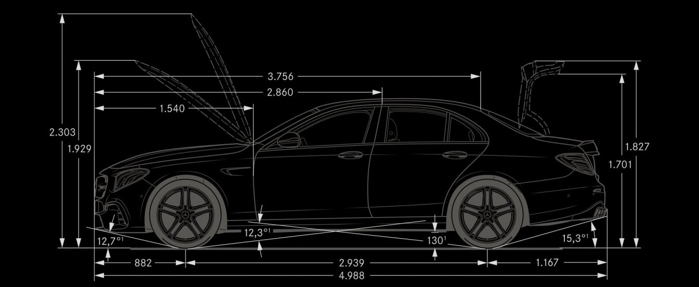 | |
| 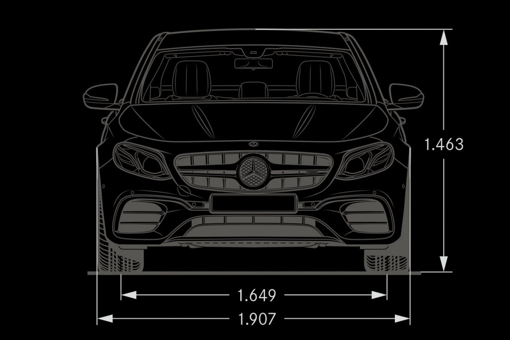 | 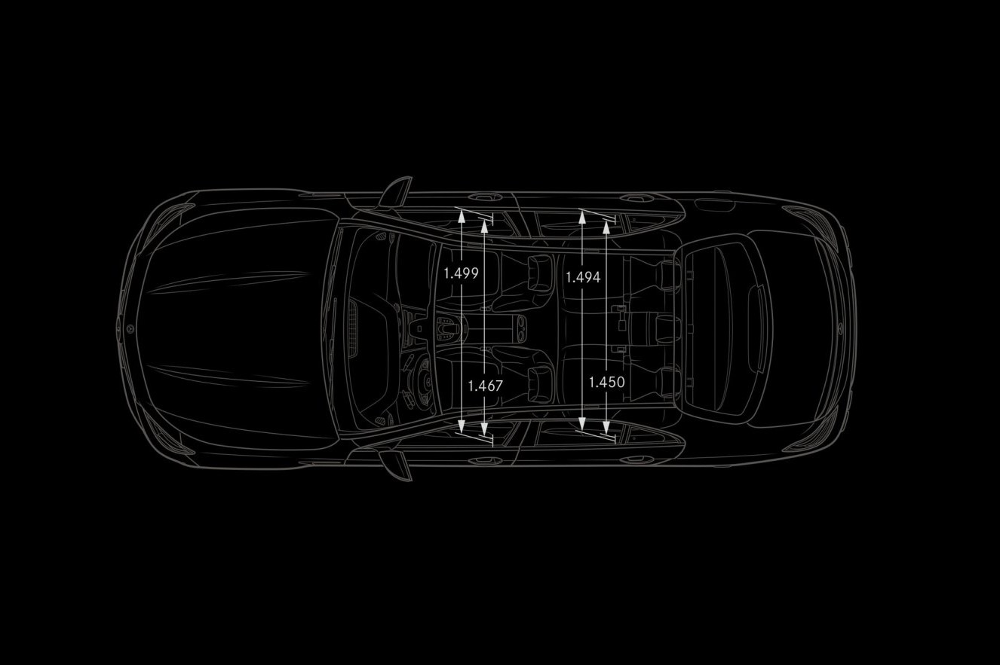 |